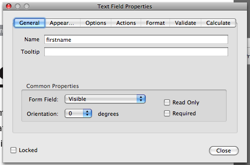
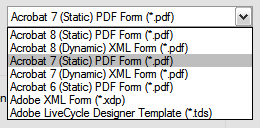
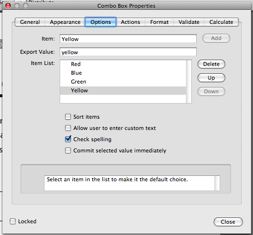

![]()
Upon popular request, I’ve decided to update the original tutorial for populating a LiveCycle PDF with PHP to apply to the new release of pdftk-php. The installation instructions should be mostly clear in the readme and in the inline comments in the example included with the script; this post is merely supplemental.
Basic usage
Initial set up
Download the most recent version of pdftk-php from GitHub and download and install pdftk on your server.
Unzip the download from GitHub and place the folder on your server. I’ve placed mine in a folder called pdftk-php.
Create a MySQL user and database and run the SQL found in /example/database.sql in a MySQL client (like phpMyAdmin) to create the sample database.
Modify the information in example/_dbConfig.php so that the application can connect to your database.
$host = "localhost";
$username = "pdftk-user";
$password = "supersecure";
$db_name = "pdftk-php";Browse to the example site (in my case, http://localhost/pdftk-php/example/index.php) and add some entries to populate the database a little.
Set up the script
Open pdftk-php.php and insert the full path to your working pdftk installation at the beginning part of the passthru() command near line 71. Here are some examples for different scenarios on server platforms:
// On a typical Unix-based installation
passthru("/usr/local/bin/pdftk ...");
// On Windows, with an absolute path
passthru("c:\pdftk\pdftk.exe ...");
// On Windows, with a relative path (useful if you place pdftk.exe in the server folder structure)
passthru("../pdftk.exe ...");If you’re on a Unix-based server and don’t know where pdftk is, type one of the following commands, which should result in the absolute path to the program:
which pdftk
# or
whereis pdftkIn example/download.php verify that the path to the required pdftk-php.php is correct, near line 18. In the example, pdftk-php.php is located a directory below the example directory. If you like to store your included files elsewhere, make sure that you modify the require() path here.
pdftk-php.php needs to be able to write to a temporary directory on your server in order to create a temporary FDF file. This directory is specified near line 58, with the tempnam() function.
If you are on a Windows server you should already be able to write to pretty much any directory (I think… I’ve never worked with IIS permissions), so you should be good to go. If you are on a Unix-based server you’ll need to be more explicit with directory permissions. To make things easier, create a temporary folder on your server and give it write permissions:
cd pdftk-php
mkdir tmp
chmod 777 tmpThen set the path in tempnam() to the new temporary folder.
// If at the same level as download.php
$fdf_fn = tempnam("tmp", "fdf");
// If one directory behind download.php
$fdf_fn = tempnam("../tmp", "fdf");
// You can also use an absolute path
$fdf_fn = tempnam("/Library/WebServer/www/pdftk-php/tmp", "fdf");Set up the PDF
Create a fillable form in either Acrobat Professional or LiveCycle Designer, or use the included example PDF form. Give each field a unique and significant name so that you can work with the form more easily later on. You can modify field attributes by double clicking on the field using the Forms toolbar in Acrobat; in LiveCycle, use the Object panel.

If you are using LiveCycle, you’ll need to save the final PDF as a static form compatible with Acrobat 7. pdftk doesn’t work with dynamic forms or PDFs from later versions of Acrobat.

Connect PDF to script
example/download.php connects to your database, retrieves a row based on a passed GET variable, saves the data from the fetched row into variables, finally calling pdftk-php.php, which does the heavy lifting of creating an FDF file and injecting it into the PDF.
Starting at around line 30 the script assigns the fetched values to variables. Each of those retrieved variables needs to be paired with a form field in your PDF (near line 39). In a basic Acrobat form this is simple:
$fdf_data_strings= array('firstname' => $pdf_firstname, 'lastname' => $pdf_lastname, 'email' => $pdf_email);LiveCycle tends to complicate the form names slightly. You can use pdftk from the command line to retrieve the official form field names. Run this command from the directory containing your PDF file:
pdftk form.pdf dump_data_fields > form-fields.txtWhen you open the resultant .txt file you should see a report of all the fields
...
---
FieldType: Text
FieldName: form1[0].#subform[0].firstname[0]
FieldNameAlt: First name	
FieldFlags: 0
FieldJustification: Left
---
...Use those long, hairy FieldNames in the $fdf_data_strings array, like so:
$fdf_data_strings= array('form1[0].#subform[0].#area[0].FirstName[0]' => $pdf_firstname, 'form1[0].#subform[0].#area[0].LastName[0]' => $pdf_lastname, 'form1[0].#subform[0].#area[0].EMail[0]' => $pdf_email, );Finally, check the values of $pdf_filename and $pdf_original near lines 62 and 65.
Go to http://localhost/pdftk-php/example/view.php and click on the download links for one of entries. You should be prompted to download a PDF file, dynamically generated using pdftk-php.php. Success!
Advanced customization
Other types of form fields
Combo boxes and radio buttons act similarly to checkboxes. If you run the dump_data_fields command with pdftk again on a form with these more advanced options, you’ll see a few differences in the results.
FieldType: Text
FieldName: email
FieldFlags: 0
FieldJustification: Left
---
FieldType: Button
FieldName: option1
FieldFlags: 0
FieldValue: Yes
FieldJustification: Left
FieldStateOption: Off
FieldStateOption: Yes
---
FieldType: Choice
FieldName: favoriteColor
FieldFlags: 131072
FieldValue: blue
FieldValueDefault: red
FieldJustification: LeftYou can see the “Yes” vs. “Off” values in our checkbox (called “Button” in PDF lingo). Drop down lists (“Choice” in PDF-speak) have multiple values, specified by you when you create the field.

Radio buttons are hybrids. They are considered “Buttons,” like checkboxes, but can have custom values, like drop down lists.
Your final PHP script will need to take these different values into account and assign the correct values in the $fdf_data_names array.
Conclusion
You can do a ton with the pdftk-php.php class once you get it set up initially and get past the slight learning curve. If you have any questions, feel free to ask in the comments. If you find any problems, comment here or open an issue at the GitHub project page. Additionally, you can fork the project and contribute.
Good luck!